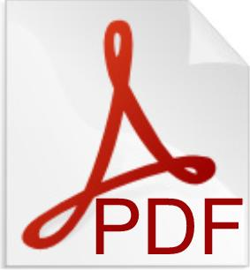

Simon Gravelle
Postdoctoral researcher
University Queen Mary
London, UK
simon.gravelle at live.fr
s.gravelle at qmul.ac.uk
Interests
Nanofluidics
Thermodynamics
Biomimetism
Activities
Molecular dynamics
Finite elements
Cpp, Python, Matlab, LaTeX
PDF resume
last updated 07/2018
Tutorial: simulating bulk water using reactive force field
This molecular dynamics tutorial decribes one of my personnal LAMMPS input files for simulating bulk water using reactive force field.

What makes the desert plant Tillandsia so efficient for water capture?
Combining micrographs of the plant epidermis and direct water flow measurement, our goal is to build a physical model explaining the water transport asymmetry that allow Tillandsia desert plant to survive in the Atacama. Our final goal is to mimick this property and fabricate artificial membranes with anomalous water transport properties.
Does the hourglass shape of aquaporins optimize water permeability?
Our answer is yes. Both numerical calculations and molecular dynamics simulations indicate that an aquaporin offers the minimal hydrodynamic resistance to flow thanks to its hourglass geometry which reduces the viscous entrance dissipation, see PNAS2013 and JCP2014 . See also a vulgarisation article (in french) MS2015 .

How does capillarity look like below the continuum limit?
We studied the capillary filling of sub-nano-metric carbon nanotubes (CNTs), and found strong deviations from the classical law of capillarity. These deviations are a consequence of the structuring of the fluid within the channel, that manifest itself in a way similar to a disjoining pressure. Strikingly, for some "magic" values of tube diameter, the tube switches from being effectivelly hydrophilic to being effectivelly, see PRE2016.
Resume
Simon Gravelle
Universidad Adolfo Ibáñez
Campus Viña del Mar
Chile
Selected publications
citations ~ 200, h-index=6, i10-index=6 (source Google Scholar, last consulted 09/2018)
- Simon Gravelle, Laurent Joly, François Detcheverry, Christophe Ybert, Cécile Cottin-Bizonne and Lydéric Bocquet : Optimizing water permeability through the hourglass shape of aquaporins. PNAS 110 (41), 16367–16372 (2013);
- Clara B. Picallo, Simon Gravelle, Laurent Joly, Elisabeth Charlaix and Lydéric Bocquet : Nanofluidic Osmotic Diodes: Theory and Molecular Dynamics Simulations. PRL 111, 244501 [5 pages] (2013);
- Simon Gravelle, Laurent Joly, Christophe Ybert, and Lydéric Bocquet : Large permeabilities of hourglass nanopores: from hydrodynamics to single file transport J. Chem. Phys. 141 (2014);
Professional and academic record:
- 2016-today : Postdoctorat, Universidad Adolfo Ibáñez, Chile. Jacques Dumais group. Fondecyt postdoctoral grants;
- 2012-2015 : PhD thesis, ILM. Title: Nanofluidics: a theoretical and numerical investigation of fluid transport in nanochannels. Official supervisors: Christophe Ybert and Lydéric Bocquet. Unofficial supervisor: Laurent Joly;
- July 2014 : Invited student at the ICE group, University College London, London, England;
- December 2013 and May-June 2014 : Invited student at the MIT-CNRS-UMI, Cambridge, Massachusetts;
- 2010-2012 : Graduate student in physics at the ENS Lyon (highly selective grande école, Lyon, France);
- 2012 : Experimental internship, LPMCN. Experimental study of nanometric flow using fluorescence correlation spectroscopy. Supervisors: Christophe Ybert and Lydéric Bocquet;
- 2011 : Theoretical and numerical internship, LPMCN. Title: Nanofluidics, study of an osmotic diode. Supervisors: Laurent Joly and Lydéric Bocquet;
- 2007-2010 : Undergraduate student in physics at the University of Franche-Comté (Besançon, France);
- 2007 : Baccalaureate S (Science stream), speciality Physics, Chemistry and Engineering, secondary school E. Belin (Vesoul, France).
Teaching background:
- 2012-2015 : Supervisor in physics of material in the University Institute of Technology (Lyon1) (practical work and tutorial classes);
- 2011-13 : Interrogator in CPGE (preparatory course for entrance examinations in Grandes Ecoles).